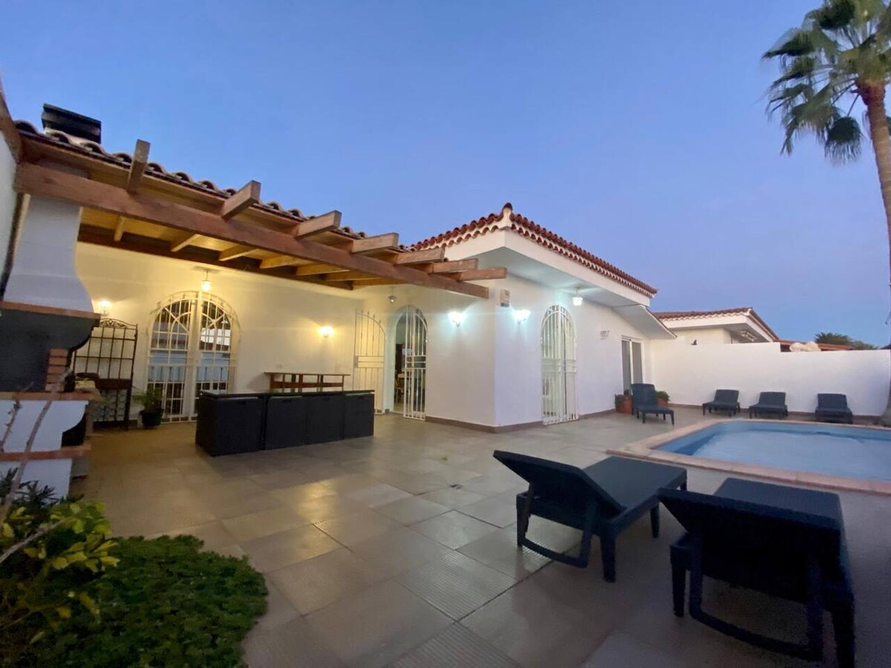
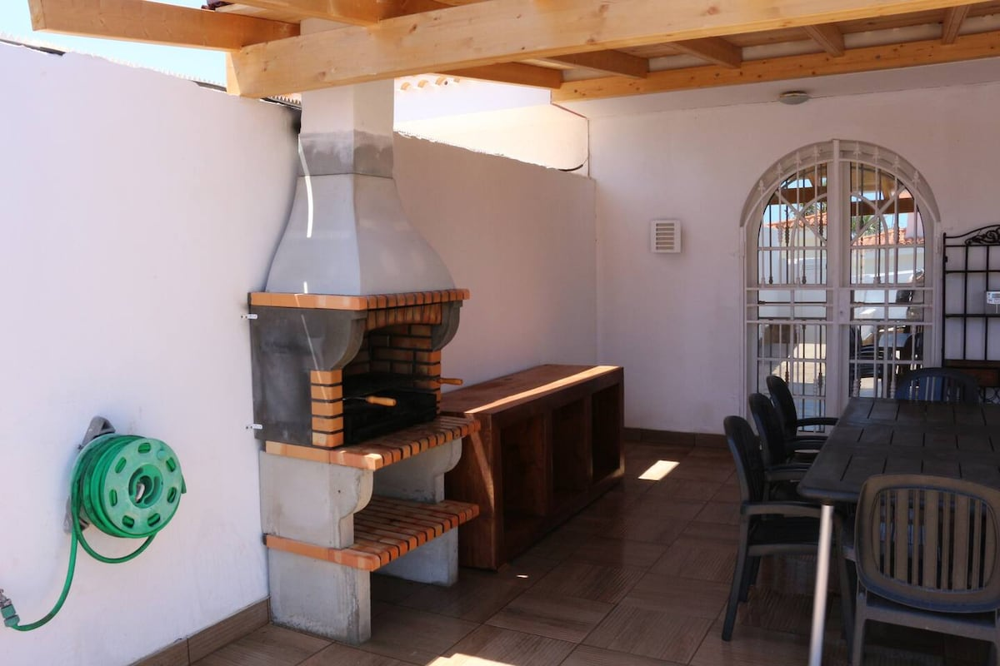
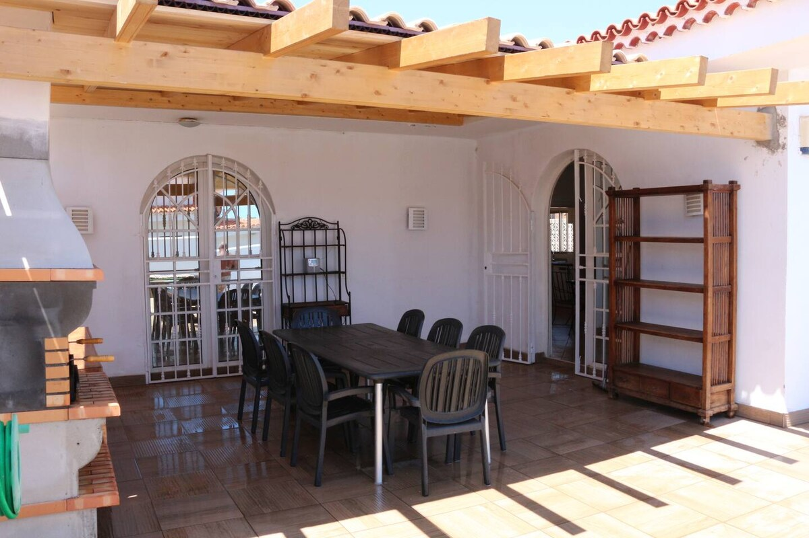
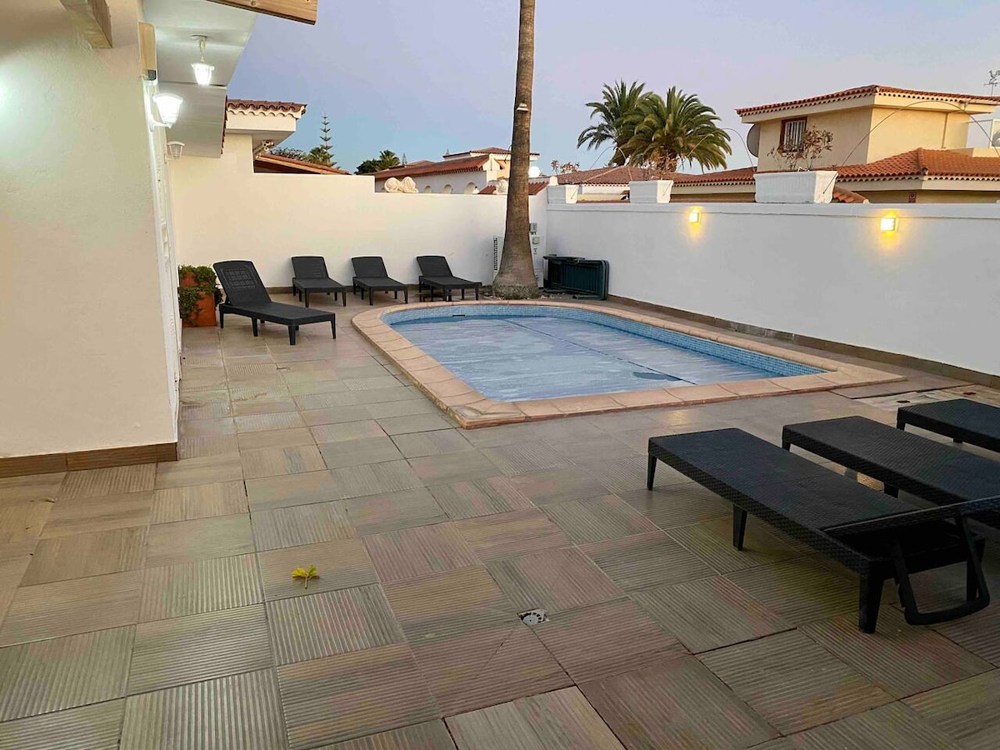
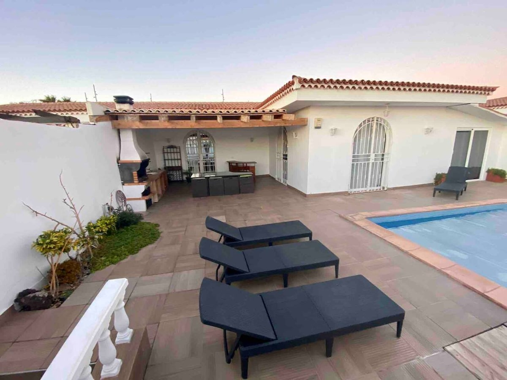
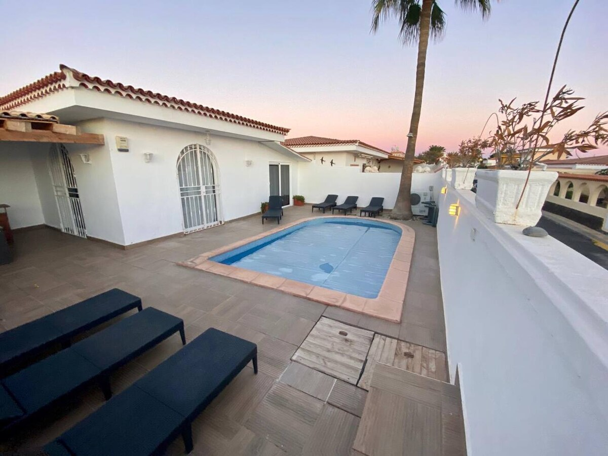
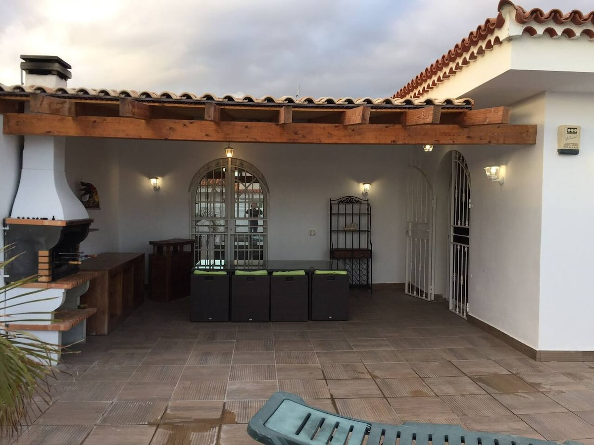
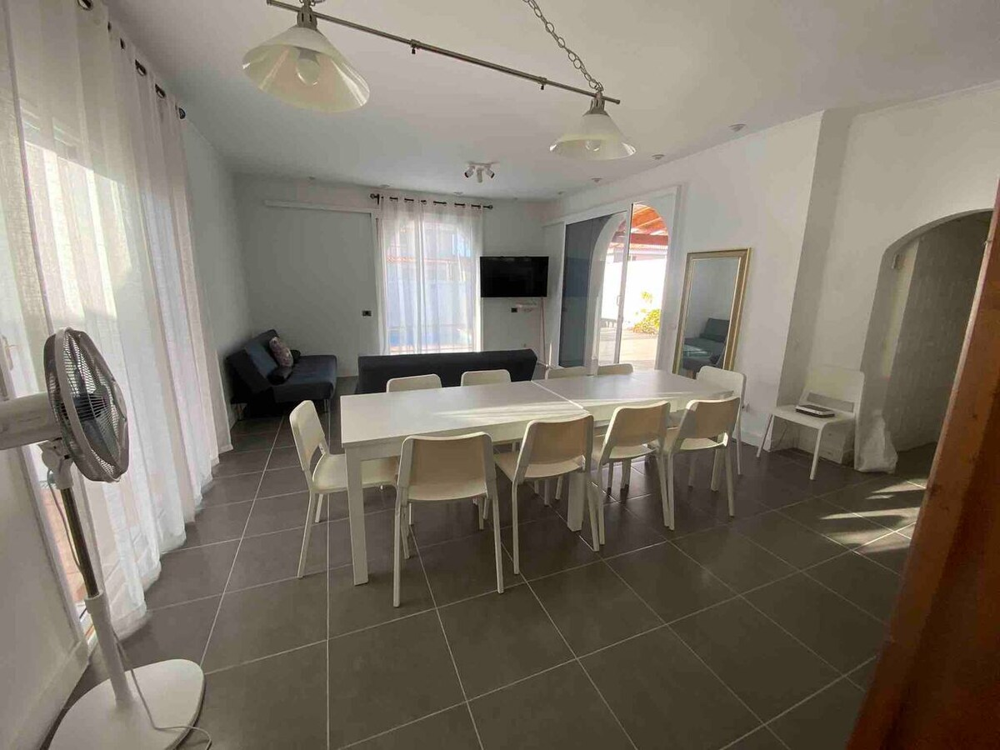
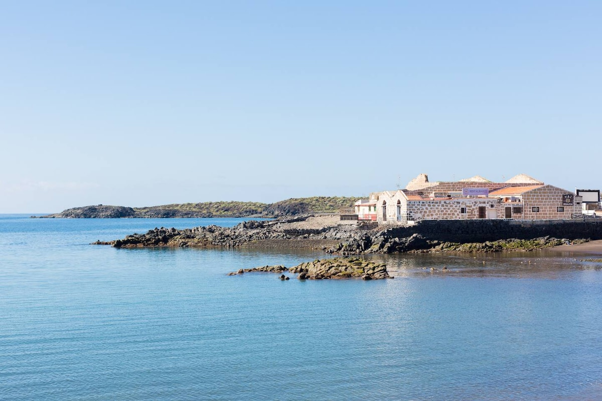
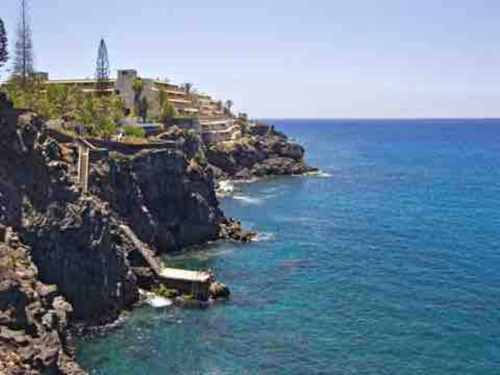
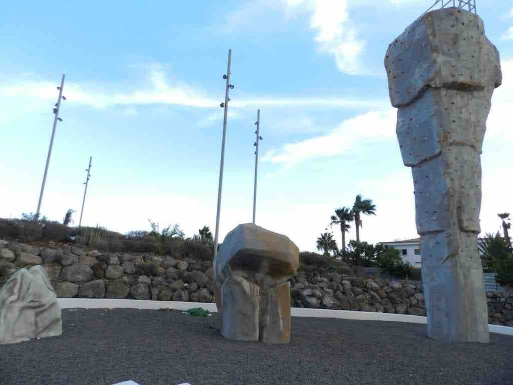
Bellissima villa di 140 m² su un terreno di 275 m² con piscina privata riscaldata (su richiesta, 50 €/settimana), pergola, barbecue, cucina completamente attrezzata e Wi-Fi in fibra ottica. Situato in una tranquilla zona residenziale circondata da un parco. La villa è soleggiata tutto il giorno, molto tranquilla e vicina a tutti i negozi, ristoranti, bar, all'incantevole villaggio di Las Galletas e al mare.
Facile parcheggio di fronte alla casa. Perfetto per una vacanza rilassante a Tenerife con tutto il comfort e la privacy di cui hai bisogno
Contattaci per disponibilità e preventivo
💬 Contattaci su WhatsApp